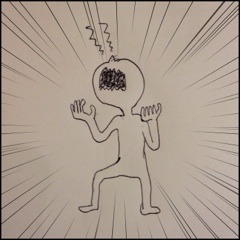
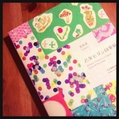
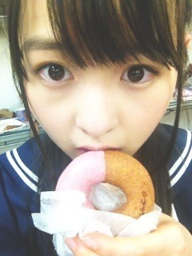
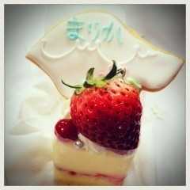

2013/0226Tue372回目*marika
うおおおおああああ
鼻ああああ

鼻かゆくてこんな状態になる時が
あります。
花粉症てやだね。
かゆくてもかゆくてもかけない。
こういうのってつらいよね。
絶賛テスト勉強中。
今日は生写真の撮影がありました。
なんかかわいーのいっぱい着たよ～
お楽しみにね～
個人pvのダイジェストが
公開されました。
ついに持ち歌3曲になってしまった！
また歌かよwとか思わず
ぜひ見てください！！！！！
びっくりしたんだけど、
なんか最後に白いの映ってたよね。
...先輩いつの間に撮影したんだ。
挨拶も何もできなかったよ～
この前いただいたバースデーケーキ！
のプレート！食べてる。
せっちゃんが送ってくれた
顔、薄！！！
おやすみなさい
まりか
2013/0224Sun371回目*marika
平成24年度ものづくり立国
「10,000人の夢王国」
みくも、まりか、ゆったん
宝石職人の内田さんから
いただいたネックレスつけてるよ！
会場にはびっくりするくらい
たくさんの乃木坂familyの方が
来てくださって...
本当にありがとうございました！
トークライブということで...
べしゃりが得意でない私。
実は本番めちゃくちゃ緊張してて、
かなりグダグダしてしまったのですが
みくもとゆったんがいたおかげで
なんとか？なりましたーいえーい ←
←
←まりっ会のみなさんも
優しく見守っててくださって
とっても安心でした！！！！
「夢は諦めなければ叶う！！！」
まりっかの名言。
迷言じゃない。
メンバーの内一人だけものづくりを
体験できたんだけど、
ゆったんに負けたー 笑
笑
笑来年もあったら普通に
体験してきます ふはは
ふはは
ふははイベントが終わった後、
現地のスタッフさんから
誕生日を祝っていただきました泣
ありがとうございました><
もともとものづくりには
興味あったし、リメイクも
ハンドメイドもすきだから
今回出演することができて
本当に嬉しかったです。
なんかまた作りたくなってきた！
楽しかったなあ。
そうだ！この前ずっと
欲しかった本買ったんだ

乙女モダン図案帖
大正昭和のレトロな柄が
いっぱい載ってるの♪
見てるだけで幸せ。きゅんきゅん
.........
誕生日から、今までの記事の
コメント読み終わりました！
1000超えてびっくりしました...
こんなにたくさんの方にお祝いして
もらっての生まれて初めて
めっちゃ嬉しかったです。
幸せです。ふふ
.........

ライブのとき差し入れで
いただいたドーナツ
では明日もがんばりまりか！
まりか
2013/0223Sat370回目*marika
UTB撮影のとき
今日はOFFだったので
昼まで寝てました...
その後買い物しました
靴下3足とギンガムチェックの
ブラウス買いました。
早く春にならないかな～
昨日のバースデーケーキ

クッキーに名前入り
あ、ただいまテスト期間なので
ブログ更新できなくなかったら
ごめんなさい。
テスト勉強しなきゃああああ
うおおおん
............
明日は
平成24年度ものづくり立国
「10,000人の夢王国」
みくも、ゆったん、私の3人が
ゲスト出演します。
再びの幕張メッセ！
初のトークライブだから緊張する
ぜひ遊びにきてください！
まりか
2013/0223Sat369回目*marika
こんにちは
昨日は幕張メッセで
バースデーライブがありました！
髪型は編み込みハーフアップ。
これ定番にしようかな。
今回はスペシャルで全曲！
＋5thシングル3曲披露しました♪
私が参加した曲
1♪ぐるぐるカーテン(全員)
2♪会いたかったかもしれない(全員)
3♪左胸の勇気
6♪おいでシャンプー(全員)
8♪狼に口笛を
9♪水玉模様(ダンサー)
11♪心の薬(全員)
12♪走れ！Bicycle(全員)
14♪人はなぜ走るのか？
17♪音が出ないギター
18♪制服のマネキン
22♪春のメロディー
23♪指望遠鏡(全員)
-encore-
♪13日の金曜日
♪シャキイズム
♪乃木坂の詩
あんなに大きな舞台で
前と違う景色が見れて最高でした！
狼に口笛をはなんと
MVで着た衣装で披露！
ヒールが高くて踊るの大変だったけど
演出がめっちゃかっこよくて
踊ってるとき興奮してた
水玉模様はその後に
水玉の傘を持ってダンス。
全部水玉でかわいかった
音が出ないギターは
いつもと違って走り回って
あおりでお客さんを盛り上げる形で
めっちゃ楽しかった！
風と煙いっぱいでライブ感満載
指望遠鏡は途中からだったけど、
私がみなさんの前で踊ったのは
初だったのよ。ずっと踊りたかった
から嬉しかったー
そして...初披露！
5thアンダー曲 「13日の金曜日」
いかがでしたか？
謎のタイトルなんだけども笑
アメリカンポップな曲調で
なんかおしゃれなんです。
衣装もふわふわでかわいいの！
色はピンク、黄色、紫、水色で
私は紫です。
フォーメーションは、初めて
フロントのいくちゃんの立ち位置を
やらせていただきます。
これからライブ等でやっていく中で
かなり盛り上がる曲になると
思います！
今週の乃木どこでMV公開されるから
チェックしてね
最後は乃木坂の詩。
すごかった。
同じ動きでサイリウムを振って
くれてるとやっぱり圧倒されます。
踊ってるとき涙腺ゆるみました。
本当に感動しました><
来て下さったみなさん
本当にありがとうございました！
スタッフさん、メンバーのみんな
本当にお疲れ様でした。
ザザッ
「お主、何者じゃ！」
今日はUTBの発売日です
本屋さんで見かけたら
ぜひ手にとって見てください！
よろしくお願いします。
まりか
2013/0223Satデビュー1周年*marika
*****HaPPy BirThDAy*****
乃木坂46♡2013.2.22
今日は乃木坂46、1歳の誕生日です。
デビュー1周年！
乃木坂46のオーディションに
合格してから生活が一変しました。
2月22日は私たちのもう一つの誕生日。
新しい自分が生まれた日です！
いろんなことを経験しました。
本当に辛いことたくさんあった。
嫌になることたくさんあった。
いっぱい悩んだ。いっぱい考えた。
こうやって経験してきて
前より負けず嫌いになりました。
誰にも負けたくない。
もっと上を目指したいと思った。
それは、たくさんのスタッフさん
だいすきなメンバー、友達、家族、
そしてファンのみなさんが
支えてくださったからです。
握手しに来てくれる。
ライブやイベントに
観に来てくれる。
ブログのコメントも、
お手紙も、プレゼントまで。
応援してくださるみなさんがいる。
たったの一言で、ライブ等の声援で
どれだけ救われたか。
アイドルとして
ここまで育ててくれて
ありがとうございました。
本当に感謝の気持ちでいっぱいです。
今日から2年目に突入します。
私は良い意味で変わらず、
変わり続けます！
まだまだ1歳の赤ちゃんですが
乃木坂46をこれからも
よろしくお願いします！
ライブについては
また次のブログで書くね
伊藤万理華